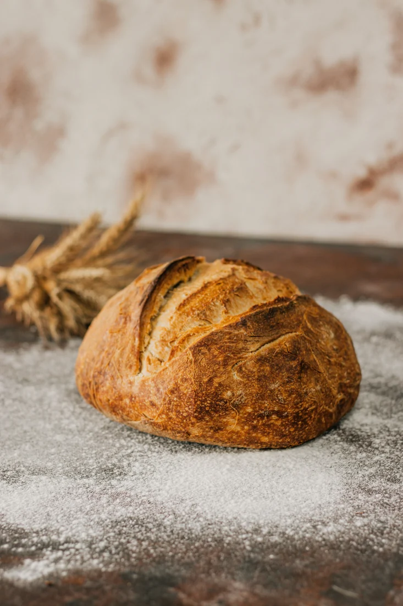
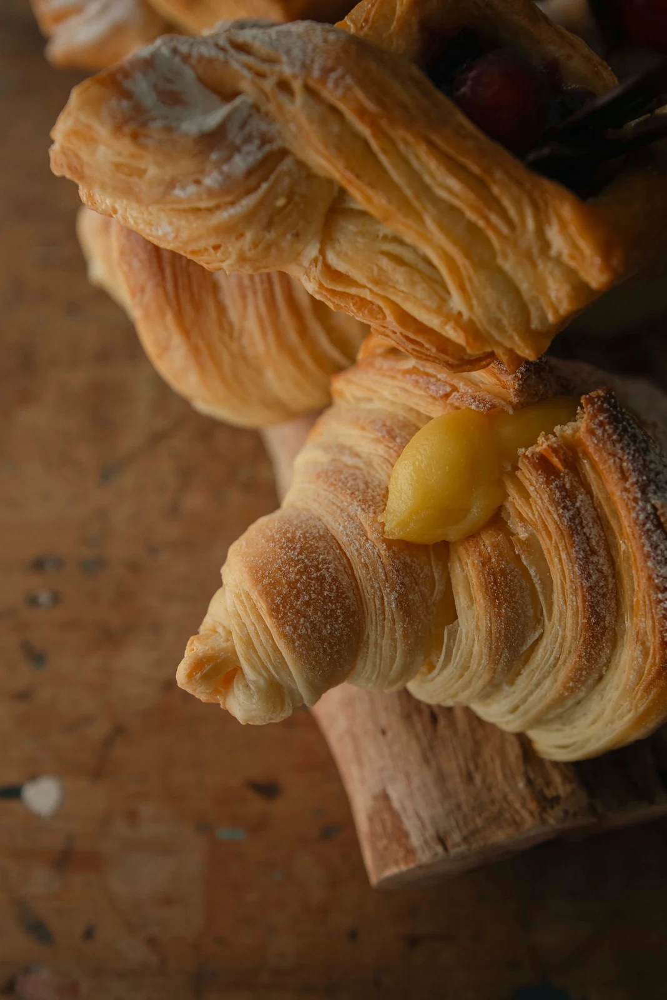
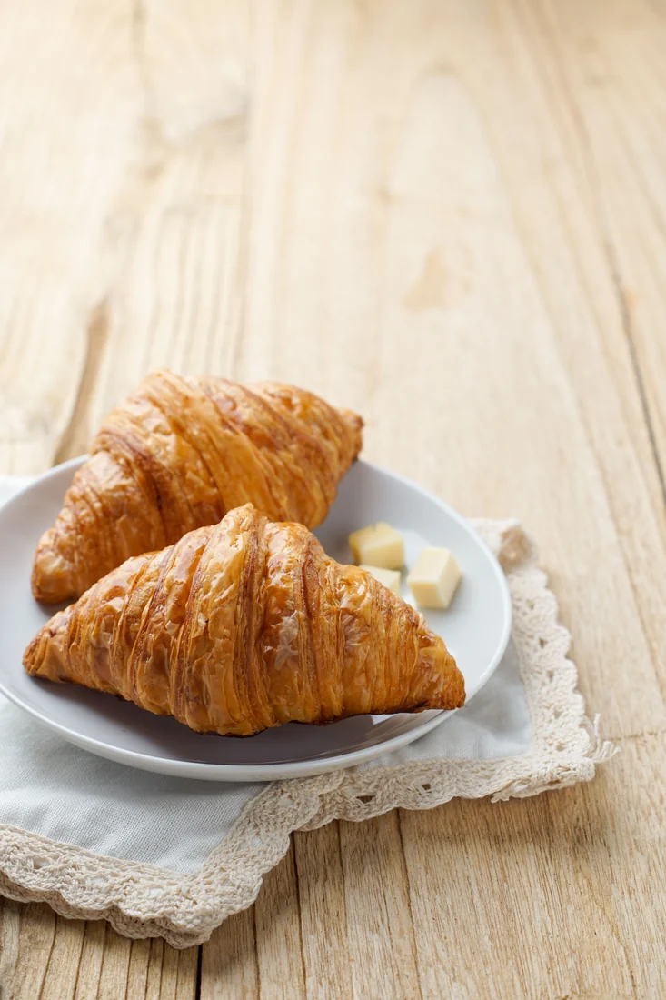
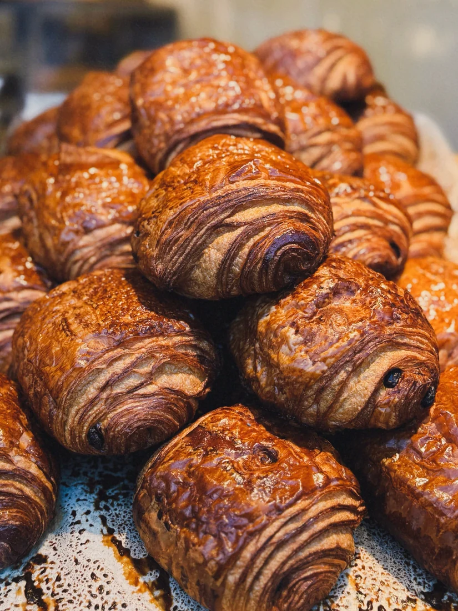
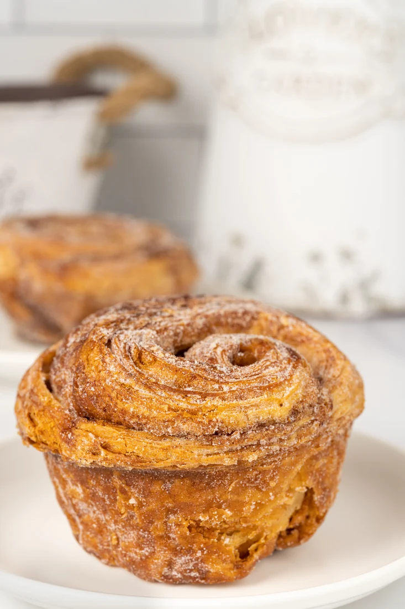
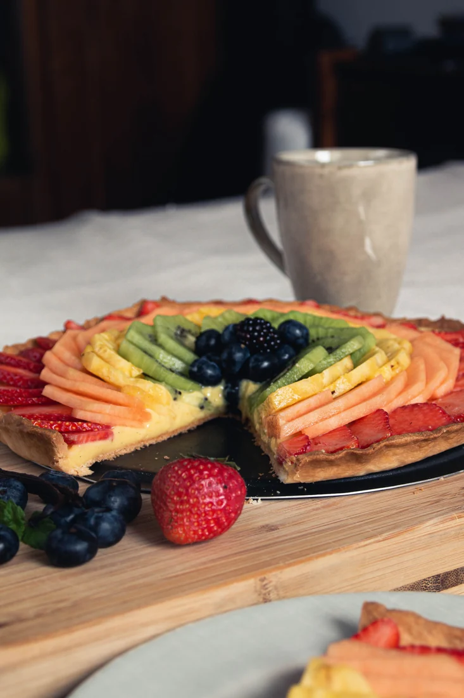
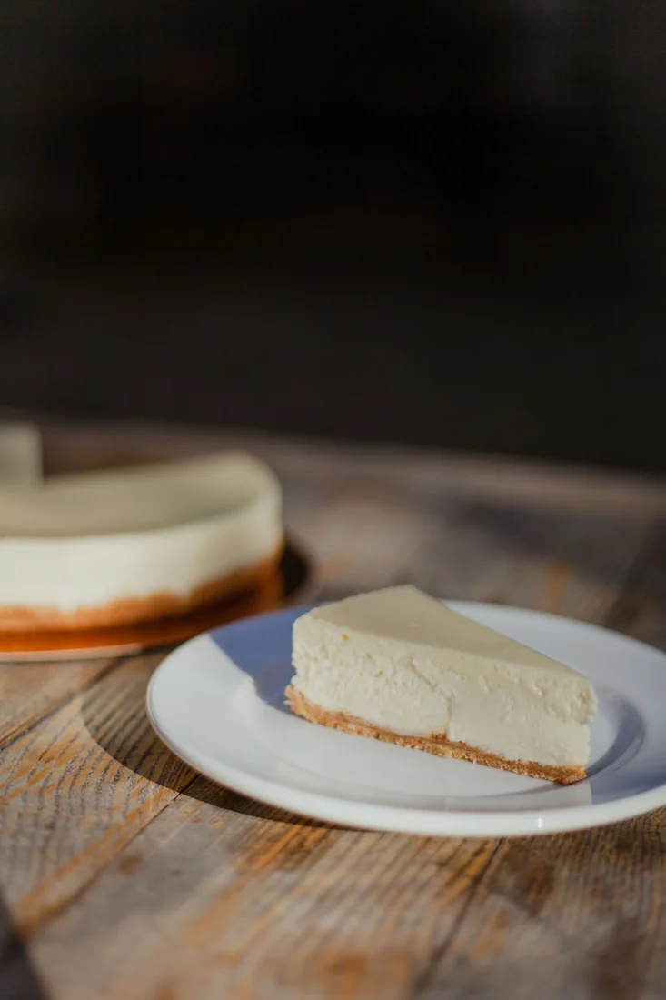
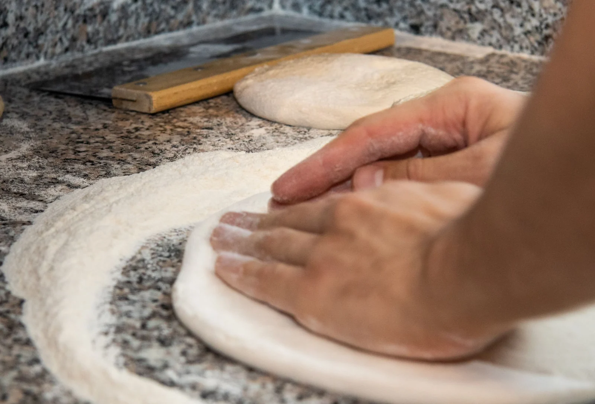

ყოველდღიური პურიპური ბუნებრივ საფუარზე
12 ₾ხრაშუნა ქერქი და რბილი გული — ცომი ნელა ფუვდება, გემო კი იხვეწება.
ერთი პური · დემო ფასიცოტა ფქვილი. ბევრი სიყვარული.
ხელნაკეთი პური, კრუასანები, ნამცხვრები და ტორტები — სიყვარულით მომზადებული თბილისში.

შენი საყვარელი გემო
ხრაშუნა ქერქი, ფაფუკი გული.
იპოვე შენი დილის საყვარელი გემო.

ყოველდღიური პურიხრაშუნა ქერქი და რბილი გული — ცომი ნელა ფუვდება, გემო კი იხვეწება.
ერთი პური · დემო ფასი
დილის კლასიკათხელი ფენები, ოქროსფერი ზედაპირი და კარაქის ნაზი არომატი.
ერთი ცალი · დემო ფასი
მსუბუქი, ხრაშუნა ცომი შოკოლადის გულსართით.
ერთი ცალი · დემო ფასი
ფაფუკი ფუნთუშა დარიჩინის სურნელითა და ზომიერი სიტკბოთი.
ერთი ცალი · დემო ფასი
ხილის ფერებითკარაქიანი ცომის კალათა, ნაზი კრემი და ხილის ფერადი საფარი.
ერთი ცალი · დემო ფასი
ნაზი, კრემოვანი დესერტი — სასიამოვნო შესვენებისთვის.
ერთი ნაჭერი · დემო ფასი6 სადემონსტრაციო პროდუქტი
სიხარულის გასაზიარებლად
დაბადების დღე, ოჯახური ზეიმი თუ პატარა სიურპრიზი — ტორტი ყველა ასეთ დღეს უხდება.
გაგვიზიარე შენი იდეა: როგორი გემო, ზომა და გაფორმება გსურს? ერთად წარმოვიდგინოთ ტორტი შენი განსაკუთრებული დღისთვის.
სცადე დემო ფორმა. რეალური შეკვეთა არ გაიგზავნება.ჩვენ შესახებ
ფქვილი სამუშაო მაგიდაზე.
სითბო ღუმელში.
გემრიელი დილის დასაწყისი.
GOLDEN CRUST მყუდრო უბნის საცხობის იდეაა: აქ ცომს ასაფუებლად დროს ვუთმობთ, მცირე პარტიებად ვაცხობთ და თითოეულ პროდუქტს ყურადღებით ვამზადებთ.
ახალი ინგრედიენტები, ხელით მომზადებული ცომეული და ნაცნობი სითბო — ოჯახურ სუფრაზე მისატანად თუ გზად სასიამოვნო შესვენებისთვის.
კარგ გემოს დრო სჭირდება.
გემო ფოტოებში
ოქროსფერი ქერქი, ნაზი ფენები და თბილი გარემო.
დემოში გამოყენებულია საილუსტრაციო ფოტოები.
ყურადღება თითოეულ დეტალს
დილის გემო, პირდაპირ ღუმელიდან.
დრო და ყურადღება თითოეულ პროდუქტს.
ყურადღებით შერჩეული, გემოსთვის მომზადებული.
შეარჩიე სასურველი გემო წინასწარ.
თბილი სიტყვები
მომხმარებელთა დემო შეფასებები
გამოგონილი მაგალითები — რეალურ შეფასებებს არ წარმოადგენს.
კრუასანი ფაფუკი და სასიამოვნოდ ხრაშუნა იყო. დილის ყავას ძალიან მოუხდა.
გემრიელი პური და მყუდრო გარემო. გზად შესვლისას ერთი ნამცხვრის დამატებაც ყოველთვის მინდება.
დაბადების დღის ტორტი ძალიან ლამაზად იყო გაფორმებული. ჩვენი პატარა ზეიმი უფრო განსაკუთრებული გახადა.
შენი შემდეგი გემრიელი შეკვეთა
პური ოჯახური სუფრისთვის. ნამცხვრები მეგობრებისთვის.
ან უბრალოდ რამე ტკბილი — შენთვის.
შენი უბნის თბილი ადგილი
მისამართი გამოგონილია — აქ რეალური საცხობი არ არის მითითებული.
ბმული ხსნის ქალაქის რუკას; საცხობის მისამართს არ აღნიშნავს.
დაგვიკავშირდით